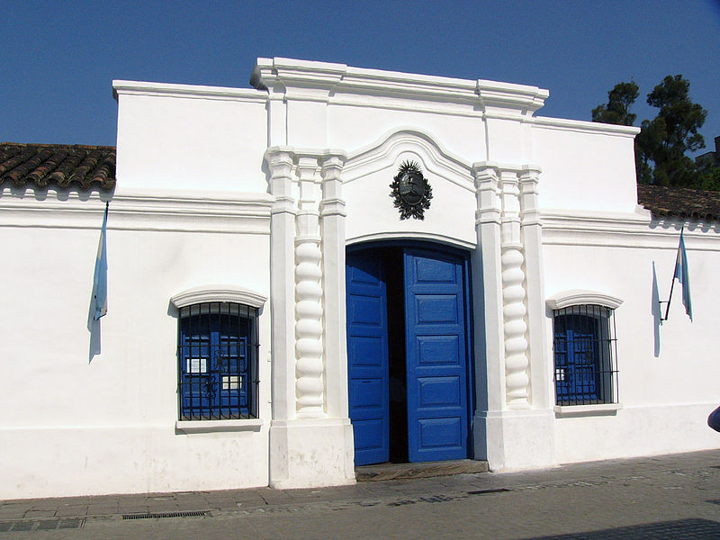
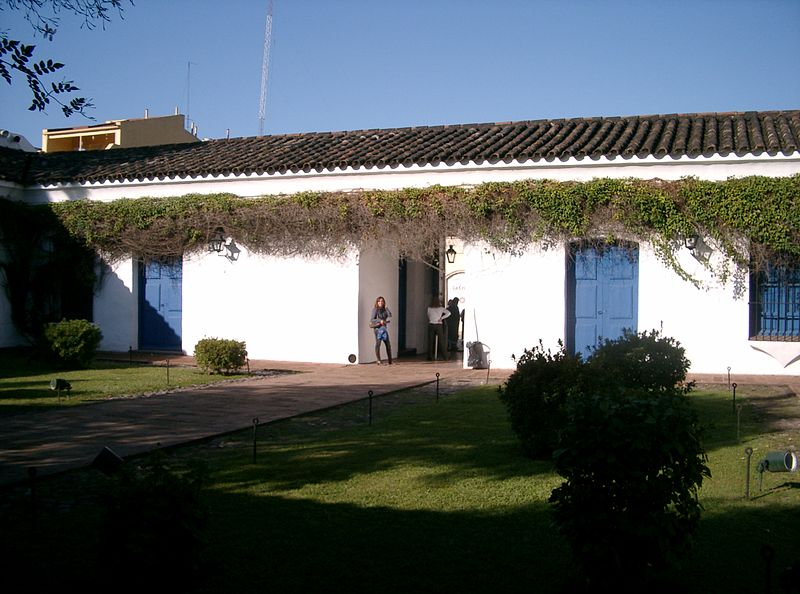

"Casita" de Tucumán
La Casa de Tucumán, Casa Histórica de la Independencia o Casita de Tucumán2 es una casa colonial localizada en el centro de la ciudad argentina de San Miguel de Tucumán, donde un cuerpo de delegados de la mayoría de las Provincias Unidas del Río de la Plata, conocido como el Congreso de Tucumán, proclamó la declaración de independencia de la Argentina el 9 de julio de 1816. Fue declarada Monumento Histórico Nacional en 1941. La casa es hoy el museo, llamado oficialmente Museo casa Histórica de la Independencia.

